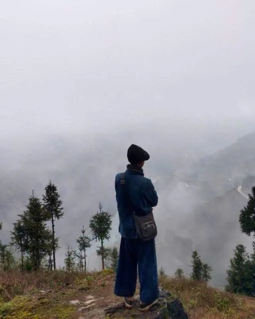

Easy rider
Ride behind someone who knows every turn — and knows which ones to slow down for.
Explore
Not just another tour. Travel with someone who calls Ha Giang home.

Who is Matt
My mother's side is Tày. My grandmother traded goods across the Chinese border and carried them back to sell in the villages here — so my childhood happened in markets, in other people's languages, in houses that were not my own. That is how I learned Ha Giang. Not from a map.
I started guiding at eighteen, carrying gear for a cook who took people into the forest. Later I tried a different life — school in Hanoi, then a desk, building websites for companies. It never held me. I came back.
Four years later I am still here. I still live here. That last part matters more than it sounds.
Two ways to travel
Small groups. No fixed convoy. We move at the pace the weather allows.

Why travel with Matt
Born to a Tày family in Đồng Văn. I know which market runs on which day, whose house we can stop at, and which viewpoint is worth the detour in this month's light.
I take a handful of people, not a convoy. If you are the slow one, nobody is waiting for you with the engine running.
We eat where I eat. We stop where there is something to see, not where a shop pays commission. Some days that means an hour longer on the road.
Proper helmets, insured bikes, and a riding speed that makes people behind us impatient. I check the forecast before the itinerary — landslides here are not a rumour.
The plan is a draft. Rain, a festival, a road closure, or simply a village you do not want to leave yet — all of these are allowed to change the day.
If your dates are wrong for Ha Giang, I will say so before you book. If something is not included, you will read it before you pay, not after.
In their words
You are very smart and alert on all the road. You bring me to places that tourist don't go. You know the short cut ways.
Keep it up! You are doing great.
Before you ask
This is the question I am asked most, and it deserves a real answer rather than a reassurance. You will be on the back of my bike or walking beside me the whole time. I ride slowly and I do not overtake on blind corners — most accidents on this loop are caused by riders in a hurry, and I have seen the results. Helmets are proper full-face ones, not the thin plastic kind. Homestays are places I know personally, and I will tell you in advance who else is staying. If at any point you want to stop, change the plan, or go back, you say so and we do it.
Not if you ride as my passenger, which is what easy rider means — I drive, you look at the mountains. If you want to ride your own bike you need a Vietnamese licence or an International Driving Permit that covers motorcycles, otherwise your travel insurance will not pay if anything happens. I will tell you honestly whether your riding experience is enough for these roads.
The rain arrives with the summer and stays into the early autumn, and that is when the landslides happen. They are serious here — roads disappear, sometimes for days. It does not mean the summer is closed, but it does mean the plan bends around the sky rather than the other way round. If your dates fall in a bad window I will say so and suggest you come another time, even though that costs me the booking. Ha Giang is not going anywhere. Tell me your dates and I will tell you what to expect.
Small enough that I know everyone's name by the first evening. I do not run convoys of twenty bikes. If you want to travel just the two of us, that is possible too — tell me when you write.
Every trip page lists this in full before the price, not after it. In short: the riding or trekking, fuel, homestays, meals along the route, permits, and helmets are included. Personal travel insurance, drinks, and anything you buy at the markets are not.
English and Vietnamese. I grew up around Tày and Hmong neighbours, so in the villages I can usually get us further than a phrasebook would.
Contact
I am not going to tell you this is the best tour in Vietnam. I do not know that, and neither does anyone who says it.
Here is what I will tell you. I read the weather before I read the itinerary — the landslides here are not a rumour. I do not ride fast to save an hour; I have seen what that hour costs. If the mountain says no, we wait, and I will not be annoyed about it.
If that sounds like the kind of trip you want, tell me when you are coming and I will tell you honestly whether it is a good time to come.
Or use the short form — four questions, nothing more.